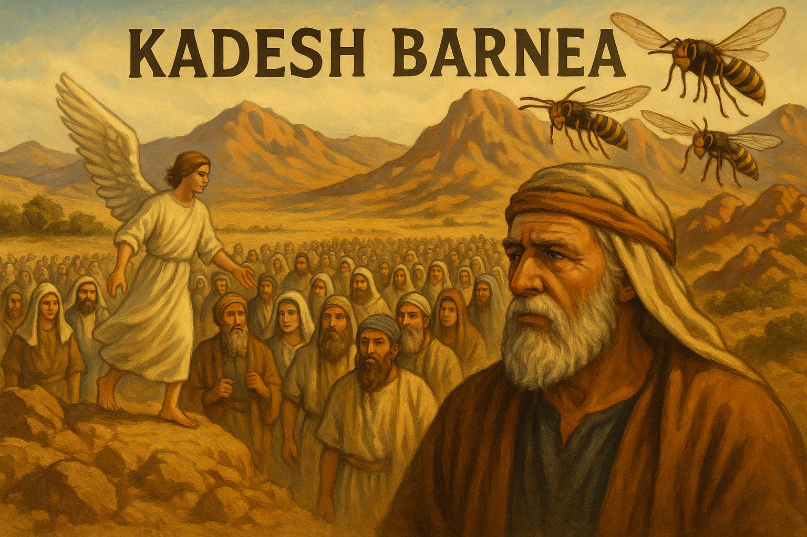
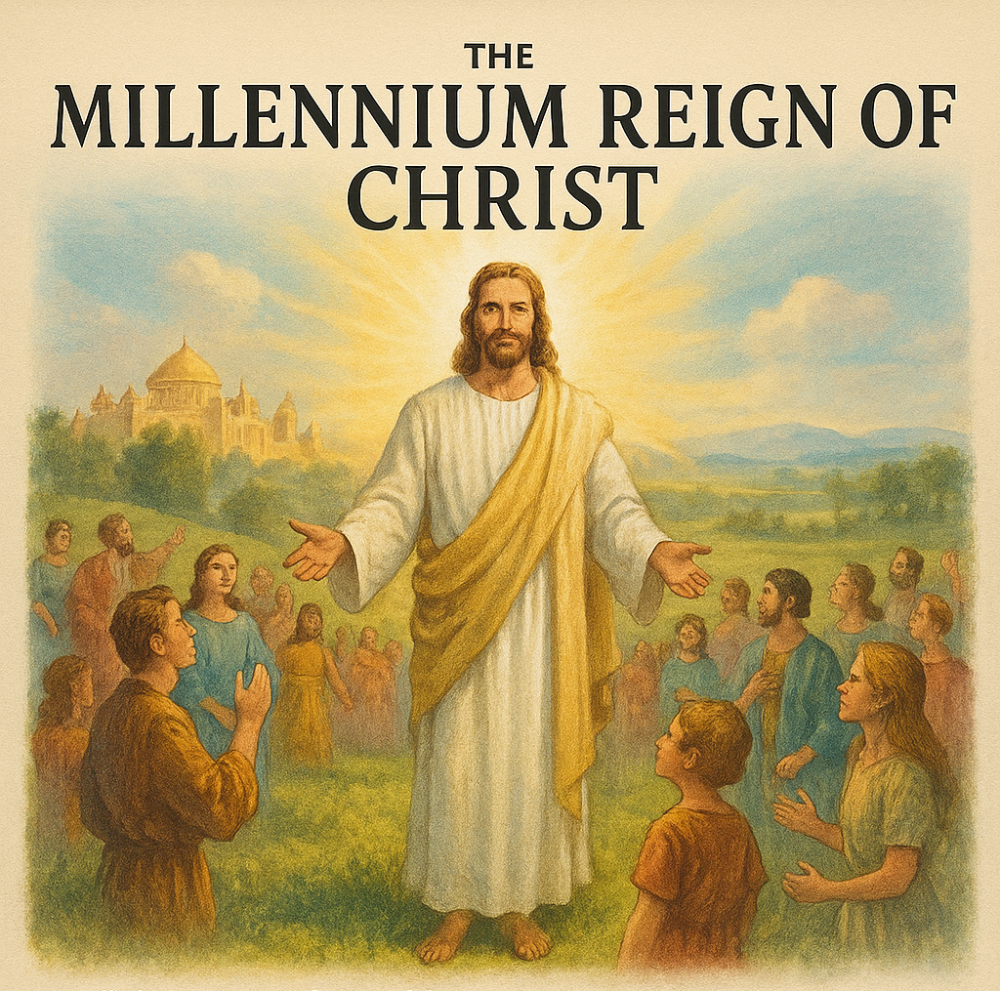

The apostle Paul mentioned in his letter to Titus a certain hope that we as Christians are to
have via, Expecting the grand object of our hope, eternal life. This what the gospel teaches us
to expect, and what the grace of God prepares the human heart for. This is called my brothers
and sisters a Blessed! HOPE! For sure they that have it are happy in the sure prospect of that
glory that shall be revealed. Some think that that the BLESSED hope and the GLORIOUS appearing
mean the same thing; but I don't think so. The blessed hope refers simply to eternal
glorification in general; the GLORIOUS APPEARING to the resurrection of the body. REMEMBERING
what Paul said in {Phil. 3: 21} for when Christ appears He will change our vile body that it may
be fashioned like unto His glorious body... NOW THAT'S Something TO LOOK FORWARD to my brothers
and my sisters in Christ, Amen? Remember that statement that our Lord made in Jn. 11:25 "I AM
THE RESURRECTION and the LIFE...
The apostle Paul mentioned in his letter to Titus a certain hope that we as Christians are to
have via, Expecting the grand object of our hope, eternal life. This what the gospel teaches us
to expect, and what the grace of God prepares the human heart for. This is called my brothers
and sisters a Blessed! HOPE! For sure they that have it are happy in the sure prospect of that
glory that shall be revealed. Some think that that the BLESSED hope and the GLORIOUS appearing
mean the same thing; but I don't think so. The blessed hope refers simply to eternal
glorification in general; the GLORIOUS APPEARING to the resurrection of the body. REMEMBERING
what Paul said in {Phil. 3: 21} for when Christ appears He will change our vile body that it may
be fashioned like unto His glorious body...NOW THAT'S Something TO LOOK FORWARD to my brothers
and my sisters in Christ, Amen? Remember that statement that our Lord made in Jn. 11:25 "I AM
THE RESURRECTION and the LIFE... No other person in the life or the life to come can make that
statement! And to back it up, He rose victoriously from the grave according to the scriptures.
The Pharisees believed that the resurrection was just for the godly; But Jesus rectified that in
John 5:28,29. The resurrection of LIFE and the resurrection of DAMNATION. Paul in his discourse
with Felix in Acts 24:15 mentions " | have HOPE in God, they also accept, that there WILL BE a
resurrection of the dead, BOTH of the JUST and the UNJUST. This exactly what the prophet Daniel
referred to in the book of Daniel 12; 2 (many of those who sleep in the dust of the earth shall
awake, Some to everlasting LIFE, Some to everlasting CONTEMPT!) So it is VERY CLEAR that the
saints will have resurrected enteral bodies unto life and the unsaved or nonbelievers will also
have bodies that will suffer torment for eternity and eternity is never ending existence, in
fact. ETERNITY IS NOT JUST EXTENDED TIME, BUT RATHER, IT IS EXISTENCE ABOVE AND APART FROM TIME.
This is a very SERIOUS state to be in Truth is, it would be better not to have been born then to
be separated from your creator. We as humans chose our destiny for choosing to except and
believe in the Lord's plan of salvation and the price that was paid for our redemption or call
Him a liar by not believing. We as the children of God have this hope, for as the scripture
said, in 1 Cor. 15:19 " If in this life only we have hope in Christ, we are of all men pitiful.
But now {remember BUT always mean the flip side] Christ is risen from the dead and has become
the first fruits of those who have fallen asleep. (deceased) Do have a part in the blessed Hope?
Without Jesus there is no hope. THINK ON THESE THINGS...
“WHY THE BIBLE IS THE ONLY WORD OF GOD?”
The Bible is the only word that proves itself. You probably say wow minister Kithcart that's a
bold statement. And you're right it is! Tell you what, if you can show the church of Jesus
Christ another book that proves itself like the sixty-six books in the bible am all ears. But
you cannot. For there is not another religious book on this planet that can name a person before
they are born. Such as:
Ishmael (Ge. 16:11)
Issac (Ge. 17:19)
Solomon (1Chron. 22:9)
Josiah (kings 13:2) 350 yrs before he was born.
Cyrus (Isa. 44:8) 150 before he was born.
John the baptist (Luke 1:13) and
Jesus the Son of God (Matt 1:21)
You can't overlook all of the prophecies and the Psalms concerning the Christ. What another book
could do that? It's like the Lord God asking the children of Israel, "Is there a God besides me?
yea there is no God; I don't know any. (Isa.44:8)...
The Bible is the only word that proves itself. You probably say wow minister Kithcart that's a
bold statement. And you're right it is! Tell you what, if you can show the church of Jesus
Christ another book that proves itself like the sixty-six books in the bible am all ears. But
you cannot. For there is not another religious book on this planet that can name a person before
they are born. Such as:
Ishmael (Ge. 16:11)
Issac (Ge. 17:19)
Solomon (1Chron. 22:9)
Josiah (kings 13:2) 350 yrs before he was born.
Cyrus (Isa. 44:8) 150 before he was born.
John the baptist (Luke 1:13) and
Jesus the Son of God (Matt 1:21)
You can't overlook all of the prophecies and the Psalms concerning the Christ. What another book
could do that? It's like the Lord God asking the children of Israel, "Is there a God besides me?
yea there is no God; I don't know any. (Isa.44:8)
No other book could give some 300 distinct prophecies concerning Christ's first Coming and ALL
fulfilled. That's why am so adamant about this book the bible as the ONLY True Word of God.
EVERYTHING else is by Satan's design! Remember Cyrus was a king and emperor by God's design and
Isaiah prophesied 600 years before the birth of Christ. If one cannot see and understand these
Truths they are in serious spiritual trouble. THINK ABOUT....
"BEING THANKFUL"
There are many benefits of being a child of God that the
world can not conceive, simply because of our new nature
which we receive as new creations in Christ 2Cor.5:17. Does
that mean that everyone is a child of God? The answer is NO
we are all God's creation, but not His children. You say
brother Kithcart, that is quite a statement. Well it is, yet the
scriptures tells us plainly in Romans 8:9b Now if anyone does
not have the Spirit of Christ, he {or she} is NOT His. This is
TRUE of every religion on this earth! Not that we have a
religion, but rather a relationship with the Father through His
Son by the Spirit of Truth. For the scripture tells us that; "Nor
is there salvation in any other, for there is NO other name
under heaven given among men by which we must be
saved." Acts 4:12. For in Him we live, and move and have our
being;
There are many benefits of being a child of God that the
world can not conceive, simply because of our new nature
which we receive as new creations in Christ 2Cor.5:17. Does
that mean that everyone is a child of God? The answer is NO
we are all God's creation, but not His children. You say
brother Kithcart, that is quite a statement. Well it is, yet the
scriptures tells us plainly in Romans 8:9b Now if anyone does
not have the Spirit of Christ, he {or she} is NOT His. This is
TRUE of every religion on this earth! Not that we have a
religion, but rather a relationship with the Father through His
Son by the Spirit of Truth. For the scripture tells us that; "Nor
is there salvation in any other, for there is NO other name
under heaven given among men by which we must be
saved." Acts 4:12. For in Him we live, and move and have our
being; For we are also His OFFSPRING, Acts:17:28,29. The
great news as children, we have so many undeserved
benefits because of His AMAZING GRACE. These benefits
include being heirs of God and joint heirs with His Son,
according to the scriptures. Ro.8:17; And something that we
as Children must not overlook, " If indeed we suffer with Him,
that we may also be glorified together". The apostle Peter
reminds of this truth concerning true believers, 1 Pe.1:21. I
will list some of the many realities as Christians that we
should be thankful for:
1. His precious blood that redeems us
2. Our redemption
3. Our liberty
4. His mercy
5. His grace
6. His forgiveness
7. His faithfulness
8. His love
9. His loving kindness
10. For the gift of the Holy Spirit
11. His peace
12. His understanding
13. His knowledge
14. Eternal life and the joy of the Lord, but most of all His Word
"THE SEVEN MYSTERIES REVEALED TO THE APOSTLE
PAUL"
What is a mystery, but something hidden or somewhat
of a secret
unrevealed for a certain time to individuals or a
person such as the apostle Paul in whom the words of
the Lord to Ananias concerning Saul at that time,
that ..." he is a chosen vessel of Mine to bear My name
before Gentiles, kings, and the children of Israel." Now
the Word of God reveals that these mysteries were hid
in the mine of God and were only revealed to the
apostle Paul. These are the mysteries that were
revealed to the body of Christ by Spirit of the Lord to
ONLY Paul :
What is a mystery, but something hidden or somewhat
of a secret
unrevealed for a certain time to individuals or a
person such as the apostle Paul in whom the words of
the Lord to Ananias concerning Saul at that time,
that ..." he is a chosen vessel of Mine to bear My name
before Gentiles, kings, and the children of Israel." Now
the Word of God reveals that these mysteries were hid
in the mine of God and were only revealed to the
apostle Paul. These are the mysteries that were
revealed to the body of Christ by Spirit of the Lord to
ONLY Paul :
1. Mystery of the Gospel : Ephesians 6:19,20 ; Romans
16:25,26.
2. Mystery of Christ : Ephesians 3:4-5 ; Colossians
1:26,27.
3. Mystery of Godliness: 1 Timothy 3:16.
4. Mystery of Faith : 1 Timothy 3:9.
5. Mystery of Israel's Blindness : Romans 11:25-32.
6. Mystery of the Rapture : 1 Thes. 4:13-18; 1 Cor.15:
50-54.
7. Mystery of God's Plan for the Gentiles: Eph.3:1-13;
Ro11:11-24.
The mysteries revealed to Paul were UNIQUE to him.
While the other apostles wrote about related Truths
and instructions, they didn't receive the exact same
revelations. The apostle Paul's writings provide a
distinct perspective on these Mysteries. Maybe
because Paul and Barnabas were given the right hand
of fellowship that they should go to the Gentiles and
Peter, James and John to the circumcised. Gal.2:7-9.
Although the apostle Paul greatly loved his own
people, for he visited synagogues 9 TIMES in the book
of Acts. He preached to Jews and Greeks, proclaiming
the gospel of Jesus Christ. Notable visits include
Antioch, Corinth and Ephesus. Indeed initially Paul
preached to Jews at Corith, but they opposed him.
Then he turned to the Gentiles and established a
church in Corinth. Acts 18:5-17.
"MEMBERS OF CHRIST, IS NOT A MEMBERSHIP
CLUB"
Counting the cost is rarely mentioned during the alter
call in churches today, perhaps it's not as important as
being saved and for sure salvation is of the utmost
importance. The parable of the sower and the seed in
Matt.13.18-23. is told by our Lord to give
understanding of the seriousness of the enemy to try
and win us back to being lost and not trusting by faith
in the power and love of our Lord Jesus the Christ and
the price that He paid for our redemption on that
cross, that day on Calvary. We could never understand
the depths of the love and grace provided for us on
His cross. The reality is that Christ died for the sins of
mankind, the the scriptures, says... that If one died for
ALL ,then were ALL dead: (2Co.5:14). But now as
members of Christ, we have ACCESS to the Father,
which no one has but the redeemed. Now brother
Kithcart that again is hard to contemplate, no not
really, I just believe the scriptures, such as: For
through Him we both have ACCESS by one Spirit unto
the Father. Eph. 2:18, and; According to the eternal
purpose which He purposed in Christ Jesus our Lord, in
whom we have boldness and ACCESS with confidence
through faith in Him. Eph 3:11,12]. And it gets better
in Christ, "Who was delivered for our offenses, and
was raise again for our justification.
Counting the cost is rarely mentioned during the alter
call in churches today, perhaps it's not as important as
being saved and for sure salvation is of the utmost
importance. The parable of the sower and the seed in
Matt.13.18-23. is told by our Lord to give
understanding of the seriousness of the enemy to try
and win us back to being lost and not trusting by faith
in the power and love of our Lord Jesus the Christ and
the price that He paid for our redemption on that
cross, that day on Calvary. We could never understand
the depths of the love and grace provided for us on
His cross. The reality is that Christ died for the sins of
mankind, the the scriptures, says... that If one died for
ALL ,then were ALL dead: (2Co.5:14). But now as
members of Christ, we have ACCESS to the Father,
which no one has but the redeemed. Now brother
Kithcart that again is hard to contemplate, no not
really, I just believe the scriptures, such as: For
through Him we both have ACCESS by one Spirit unto
the Father. Eph. 2:18, and; According to the eternal
purpose which He purposed in Christ Jesus our Lord, in
whom we have boldness and ACCESS with confidence
through faith in Him. Eph 3:11,12]. And it gets better
in Christ, "Who was delivered for our offenses, and
was raise again for our justification. THEREFORE bring
justified by FAITH we have PEACE with God through
our Lord Jesus Christ: By whom also we have ACCESS
by faith into this grace in which we stand and rejoice
in the hope of the glory of God. (Rom.4:25;5:1,2). All
this is only part of the benefits that we have as
partakers and members of the body of Christ. Now
truth that am about to share with the body and
members of Christ is this FACT and that is as
Christians, well first let me as a minister of Christ, ask
you this question, via have you ever heard a Christian
or Pastor or teacher say "am just a sinner saved by
grace" sounds a bit of humility, yet not in the site of
the ONE who reconciled us back to God. Sure no doubt
we are tempted to sin (Ja.1:14) some times over taken
by sin (Gal.6:1) for sure because of fallen our fallen
nature that we inherited from our fore parents Adam
and Eve, nevertheless once we are born of the Spirit
and placed in the body of Christ we are NEVER CALLED
SINNERS AGAIN! NEVER, again I say NEVER. This what
we are called :
CHOSEN- 2 Tim 2:4
HEIRS -Ro.8:17
SAINTS AND FAITHFUL- Col.1:2
ELECT-Rom. 8:33
DEAR CHILDREN- Eph.5:1
CHILDREN of the light,
of the day,
of God,
of Abraham,
of the resurrection,
of the promise,
of the living God,
of the Highest,
of the living God, NEVER SINNERS, always in the past
sense WERE we referred to, before we became the
offspring of God, Acts 17:28,29. Remember sinners
can not inherit he kingdom of God. In whom we once
WERE. Think about it and be sure to fact check the
scriptures. Be like the Berens who searched the
scriptures daily to see whether whose things that Paul
taught were so. Acts 17:11.

"What was Kadesh Barnea?"
It was the promise land that the Lord had promised to the children of
Israel for them to take and conquer with His help. And this is how it is told in the scriptures
in the old covenant : Of course most students of the bible have heard of this story and so was I
until I heard a teacher of the bible named Les Feldick arrested my attention to what was really
the Lord's plan to conquer Israel's enemy and it WAS'T the twelve spies! Take notice or recall
the ten plagues that Israel witness by the power of the Lord. These plagues demonstrated God's
power over Pharaoh and the Egyptian gods,ultimately leading to the Israelite's' freedom from
slavery. These are the 10 plagues of the book of Exodus:
1. Water turned into blood (Ex. 7:14-24),
2. Frogs (7:25-8:15),
3. Lice or gnats (8:16-32),
4. Flies (8:20-32),
5. Disease on livestock (9:1-7),
6. Boils (9:8-12),
7. Hail (9:13-35),
8. Locusts (10:1-20),
9. Darkness (10:21-29),
10. Death of the firstborn and the firstborn of cattle (11-12).
If that wasn’t enough the Lord opened the Red Sea so that they could escape from the approaching
of Pharaoh's army.
There were so many signs and miracles that followed, but the Israelites had one MAJOR problem
which was people of whom there was NO FAITH (Deu. 32:20).
This is what the Lord said of them.
We as Christians should take note of their lack of faith and trust in God after the Lord brought
us through so much.
Can I get a witness?
Romans 15:4 "For whatever things written before were written for our learning, that we through
patience and comfort of the Scriptures might have hope."
The apostle Paul also mentioned to the Corinthians the things that happened with Israel:
NOW ALL THESE THINGS HAPPENED TO THEM AS EXAMPLES AND THEY WERE WRITTEN FOR OUR ADMONITION... (1
Cor. 10:11).
Ok, back to the subject at hand — KADESH BARNEA.
The Lord promised to send an Angel before them to prepare them for the land of their enemies,
who they were and how He would destroy them.
And that He would send HORNETS before them.
After all that He did to the Egyptians this should have been easy.
But no — they asked Moses to send spies out to search out the land, then bring them a report if
they could take the land that was flowing with milk and honey (Num. 13).
Moses rehearses their blunder of the faithless Israelites and why they did not enter the
promised land (Deu. 1:19-40).
Why is faith so important to believers?
Because without it, it is impossible to please God (Heb. 11:6).
As Christians let us not forget how and what our Lord has brought us through and the miracles
that we are in Him and by Him.
For the just shall live by faith. Hab. 2:4; Ro. 1:17; Ga. 3:11; He. 10:38.

"THE MILLENNIUM REIGN OF CHRIST"
As Christians we understand from the scriptures that millennium
refers to a 1,000 - year period. It can also be used to describe any 1,000 - year span. The word
"millennium" isn't explicitly mentioned in the bible. However, Revelation 20:1-7 describes a 1,000-
year period, often interpreted as the Millennium of Christ. This passage forms the basis for the
millennium theology. Let's look at the three views of the millennium which are :
1. POSTMILLENNIALISM, which believes Christ will return after a long period of gospel growth and
earthly prosperity. The church's efforts will lead to a "golden age" with widespread Christian
influence and moral transformation, ultimately culminating in Christ's return. This view in my
understanding is extremely out of context with Israel's prophecy and promises.
2. AMILLENNIALISM sees the 1,000 years as symbolic, not literal, and that Christ's reign is NOW
through the church. They focus on the spiritual kingdom, not a future earthly reign. This view
emphasizes the present reality of God's kingdom. AGAIN, ignoring ISRAEL'S PROMISES AND
PROPHECIES.
3. PREMILLENNIALISM (which I believe and teach, will explain why in my discourse) believes in Jesus’
return before the 1,000-year reign. The rapture or the CAPTIONING AWAY removes believers, followed
by the tribulation. Then, Christ returns to defeat evil and establishes a literal earthly millennial
kingdom, with believers reigning with Him.
This is what I believe to be the true hermeneutics and exegesis concerning eschatology of Israel and
the body of Christ.
These are some of many prophecies concerning the thousand-year reign of Christ:
Psalms 2:7-9 — Christ rules with a rod of iron.
Isaiah 11:6-11 — Peaceful kingdom with the Lord and the saints.
Ezekiel 37:21-28 — God's people gathered, Davidic kingdom restored.
Zechariah 14:9 — God's kingdom on earth, King of Kings, the reign of Christ.
Revelation 20:1-6 — Satan bound for a thousand years.
Now the question is, will there be sin within the hearts of men and women during Christ's reign? And
the answer is YES, according to the scriptures:
Isaiah 2:2-4; 11:3-5; 65:20
Zechariah 14:16-21
At the end of the 1,000-year reign of Christ, Satan will be loosed for a season. Then Satan will
carry on his rebellion and deception to those on the earth who still have the nature of our first
parents, Adam and Eve — which will be many: "the number of whom is as the sand of the sea" (Rev.
20:8).
This has been a brief understanding of the MILLENNIUM REIGN OF CHRIST.
Hope to see you there, and as always keep brother Kithcart and his family in your prayers, and may
the grace of our God be with you, amen.